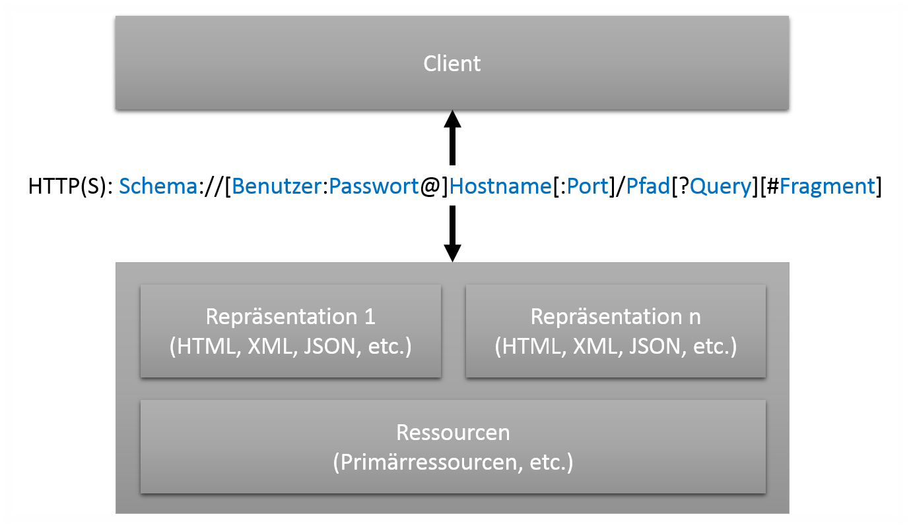

REST RESTful HTTP
Begriffe, Konzept und Best Practice
Florian Loch, 18.11.2013
Herkunft, & wichtige Eigenschaften
Representational State Transfer
Ein Architekturstil für Integrationsszenarien, keine Implementierung
Entworfen von Roy Fielding im Jahr 2000
Verknüpfung von Systemen durch „Lose Kopplung“, sprich Datenaustausch
Alternative zu (proprietären) Lösungen via Sockets, Named Pipes oder Shared Memory
Anfangs recht unbeachtet erlebt REST durch WebAPIs Konjunktur
REST schreibt kein Dateiformat für den Datenaustausch vor
Fielding wollte mit seiner Dissertation mit dem Namen „HTTP-Object-Model“dem Web eine neue theoretische Basis geben, da der Grundsatz von statischen Seiten mit eindeutigen Indikatoren durch dynamisch errechnete/generierte Inhalte immer mehr verwischt wurde
REST ist eine abstrakte Ebene oberhalb einer jeden Implementierung (Daher nicht, wie gern getan, zu vergleichen mit Systemen wie SOAP, welches eine konkrete Implementierung darstellt)
Alternative, mehr oder weniger verbreitete Standards, sind bspw. RMI, CORBA, RFC sowie diverse andere Systeme welche via Sockets und eigenen Protokollen, Named Pipes oder Shared Memory agieren
Zu eng gekoppelte Systeme werden de facto zu „einem“ System
HTTP
Hypertext Transfer Protocol
„Motor des Webs“
Ab 1989 von Roy Fielding und Tim Berners-Lee entwickelt
Aufgeteilt in Header und Body
Header besteht aus Feldern (Key-Value-Paare)
Body enthält Nachricht (bspw. auch HTTP-Post-Parameter)
Wirklich nur ganz kurz angerissen...
REST + HTTP = RESTful HTTP
HTTP bietet sich an, da...
Eine uniforme, offene Schnittstelle
Ungeschlagene Interoperabilität, da durch jede bedeutende Plattform und Sprache unterstützt
Protokoll effizient, optimierte Clients (Caching, Komprimierung etc.)
Skaliert sehr gut (da zustandslos)
Last but not Least: REST Vorgaben passen perfekt auf HTTP
Theoretisch schreibt REST nicht die Verwendung von HTTP als darunterliegendes Protokoll vor - es empfiehlt sich jedoch aus vielen Gründen. Des Weiteren schwebte Fielding sicher die Implementierung durch HTTP vor; diesen Schluss lässt bereits der Titel seiner Dissertation zu. Zudem wollte man die technologische Hochleistung des WWW auch in anderen Bereichen der Datenverarbeitung nutzen.
Sollte eine Sprache oder Plattform HTTP nicht unterstützen, so wäre die Implementierung auf einem Bestehende TCP/IP-Stack mit vertretbarem Aufwand möglich
Skaliert sehr gut; da keine sitzungsbezogenen Daten im Arbeitsspeicher des Servers gehalten werden müssen können nachfolgende Anfragen eines Clients auch von anderen Servern beantwortet werden (ohne, dass diese mit dem ersten Server in Verbindung stehen müssten).
Zentrales Konzept: Ressourcen
Eindeutige Identifizierung (später mehr dazu)
Ressourcen sind eine Abstrakte Instanzen, die Daten „beinhalten“
Werden durch Repräsentationen (Darstellungsform/Format) dargestellt
Man sieht nie die Ressource selbst sondern immer nur eine Repräsentation dieser
Jede Ressource hat mindestens eine Repräsentation
Die verschiedenen Ressourcen (1/2)
Primärressourcen: offensichtliche, persistierte Entitäten (i. d. R. ein Substantiv)
Subressourcen: Teil von P.-Res., der auch eigenständig stehen könnte
Listenressourcen: Array von Instanzen einer Ressource bzw. deren Repräsentation
Filter: eingeschränkte/eingegrenzte Liste
Paginierungen
Projektionen: Beschränkung bzgl. der Attribute einer Ressource; nicht anhand dieser wie die Filter
Beispiel Subressource: Eine Lieferadresse innerhalb der Ressource „Bestellung“ könnte auch einzeln als Ressource „Adresse“ bestehen.
Die verschiedenen Ressourcen (2/2)
Aggregationen: Zusammenfassung mehrerer Attributsmengen einer Ressource; nicht von Instanzen wie eine Liste
Aktivitäten: Ressourcen, deren Notwendigkeit sich aus Prozessen/Aktivitäten bzw. deren Ablauf ergibt
Konzeptressourcen: Keine wahre Identität dahinter, sondern nur Verweise bzw. über Verweise bezogene Daten („303 see other“)
Die 5 Kernprinzipien von REST
Identifikation, Hypermedia, Standardmethoden, Repräsentationen, Statuslose Kommunikation
Ich habe den Vorgriff zu RESTful HTTP gemacht, um nun direkte Umsetzung in HTTP einführen zu können
Eindeutige Identifikation
Jede Ressource (ähnlich einem Entitätstyp) wird eindeutig mit einer URI identifiziert
Globales System, welches weltweit einzigartige IDs garantiert
URIs sind auch für nicht technikaffine Menschen verständlich und zu behalten
Ermöglicht Hierachie
Sieht bereits Notationen für Filter und Selektionen vor
Hinter einer Identifikation steht genau eine Ressource; Es kann allerdings hinter mehreren URIs dieselbe Ressource stehen
URI: „Universal Ressource Identifier“, auch dazu später mehr.
Verknüpfungen / Hypermedia
Grundidee des Internets: Verknüpfungen zwischen Dokumenten
Eine Ressource kann direkt auf andere Verweisen
Steuerung des Applikationsflusses (Server kann Client mögliche Schritte, in Form von URIs, mitsenden)
Client kann zu Daten einer Ressource über Verknüpfungen weitere Informationen von anderen Ressourcen beziehen. Bspw. eine Liste aller Einkäufe eines Kunden, welche auf die Ressource „Artikel“ verweist.
Client kann sich so auch von Server steuern lassen
Standardmethoden (HTTP-Verben / CRUD) (1/2)
Jede Ressource „implementiert“ alle Methoden
HTTP-Verb Operation Safe?
DELETE Entfernen einer Identität Ja
GET Abrufen von Daten einer Ressource bzw. Identität Ja
POST Anlegen einer Identität, starten beliebiger Operationen Nein
PUT Aktualisieren einer Identität Ja
CRUD : Create, Read, Update, Delete
Jede Ressource implementiert jede Methode gibt Sicherheit; wie in OO-Programmierung die Implementierung eines Interfaces
Daneben gibt es noch die HTTP-Verben HEAD, TRACE, CONNECT und OPTIONS, diese sind jedoch für REST nur von geringer Bedeutung.
„Safe“ meint, dass die Methoden idempotent sind, d. h., dass ein (versehentlich) mehrfacher Aufruf keine Folgen hat
Standardmethoden (HTTP-Verben / CRUD) (2/2)
Bei PUT sollten korrekterweise alle Daten gesendet werden; in der Praxis jedoch eher unüblich
Aufrufe von PUT, POST liefern Antwort mit entsprechendem HTTP-Status (200 bzw. 201) und den kompletten Daten der erstellten/geänderten Indentität (wie bei GET)
Unterschiedliche Repräsentationen
REST schreibt kein Dateiformat vor
Daten einer Ressource können in verschiedenen Repräsentationen vorliegen
Aushandlung des Formats durch „HTTP Content Negotiation“...
Durch verschiedene Repräsentationen bessere/flexiblere Unterstützung von Clients
Genau genommen bekommt man die Ressource nie zu Gesicht - sondern immer nur eine ihrer (möglicherweise vielen) Repräsentationen.
Content Negotiation ist fester Teil des HTTP-Headers. Der Client sendet an den Server mit, in welchem Dateiformat er gerne eine Antwort hätte - ist dies für den Server im Bereich des Möglichen entspricht er dieser Bitte, ansonsten sendet er in einem Format seiner Wahl.
Bspw. ist die Kombination von XML und JSON für die verschiedenen Phasen der Client-Entwicklung nützlich: XML für Entwicklung und Debugging da für Menschen, dazu zählen Entwickler angeblich auch, besser lesbar. Für Betrieb JSON, da weniger Overhead.
Statuslose Kommunikation
Zustand wird entweder von Client gehalten (bspw. in URI), oder von Server in Ressourcenstatus umgewandeltBestellung: id , #kunde_id, abgeschlossen
Warum keine „nativen“ Sessions?
Prinzip der losen Bindung zwischen Client und Server
Skalierbarkeit des Systems
Server behält Status des Prozesses nicht im RAM; bzw. nachfolgende Anfragen werden nicht zwingend vom selben Server beantwortet. Entweder hält der Client den Status (in RAM oder ROM), oder der Server wandelt ihn in einen Ressourcenstatus, sprich er vermerkt innerhalb der Ressource den Stand des Prozesses. Natürlich sind auch andere Verfahren zur serverseitigen Persistierung denkbar. Die clientseitige Lösung birgt die Gefahr einer Manipulation des Status und damit des Prozessablaufes.
URIs und deren Aufbau
URI: Unified Ressource Locator (RFC 3986)
Beschreibt (fast) alle Arten von Adressen: URLs, Mailto, FTP, Telefon...
Aufbau einer URI:Schema ://[Benutzer :Passwort @]Hostname[:Port ]/Pfad [?Query ][#Fragment ]
URLs stellen eine Teilmenge der URIs dar
IRIs können dasselbe wie URIs - allerdings dürfen sie alle Unicode-Zeichen enthalten. URIs verwenden nur eine Untermenge des US-ASCII-Zeichensatzes.
(vHost sind beispielsweise auch nur durch URIs bzw. deren Pflichtangabe im HTTP-Header möglich.)
Query ist weder in Fieldings Dissertation, noch im HTTP- oder URI-Standard definiert. Verwendung hat sich dennoch eingebürgert und ist nicht „geächtet“.
Alternativ zur Query-Schreibweise gibt es die Matrixschreibweise, welche durch Semikolon eingeleitet und separiert wird (Bsp.: .../index.html;id=5;user=donkeykong;pw=banana)
Die Fragment-ID wird als einziger Teil der URI rein clientseitig verarbeitet (bspw. in HTML als Anker)
Ein Nutzer sind einer URI nicht an, welcher Teil zur Identifikation der Anwendung auf dem Server verwendet wird und welcher tatsächlich Daten enthält
Gutes und standardkonformes URI-Design (1/2)
Aufbau von Modell: URI adressiert Substantiv (Ressource), HTTP-Verb die Aktion
Ressource im Plural (egal ob Liste oder einzelne Primärressource)
Hierarchien einbeziehen
Übergeordnete Pfade sollten auch vorhanden bzw. sinnvoll sein
Filter sollten Queries verwenden
Was? ==> HTTP-Verb
Gutes und standardkonformes URI-Design (2/2)
Stabile URIs anstreben: „Cool URIs don't change“ (Tim Berners-Lee)
„301 redirect“
„410 gone“, im schlimmsten Fall „404 not found“
Robustness Principle, Postels Law
Was? ==> HTTP-Verb
Postels Law (aus dem TCP-RFC): „Be conservative in what you do, be liberal in what you expect from others.“
Zwar sind Queries nirgends standardisiert, sie sind jedoch weit verbreitet und werden bspw. von HTML-Formularen verwendet. Probleme können mit Cache-Servern wie „Squid“ auftreten, die URIs mit Queries prinzipiell nicht cachen
Beispiele für URIs
http://example.com/crm/customers/30142 http://example.com/crm/30142 http://example.com/crm/customers?id=30142 http://example.com/crm/customers?plz=76149 http://example.com/crm/30142.xml
Übersicht System

Wie gesagt: 1 Ressource pro Identifikator, n Identifikatoren pro Ressource
Weitere Informationen
Das Buch kann auch in der KIT-Bibliothek ausgeliehen werden.